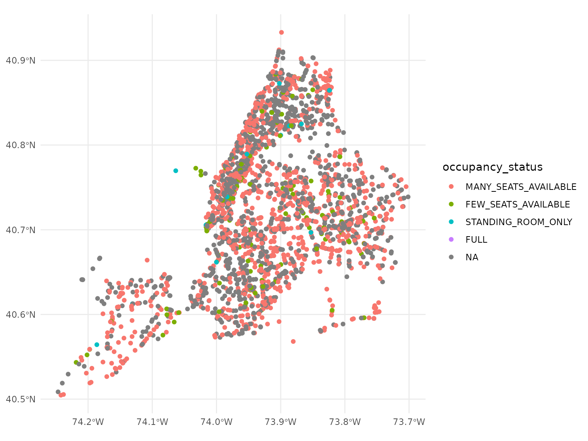

Vehicle positions
positions.RmdIn this vignette, I will demonstrate reading vehicle positions, using a GTFS-realtime file that ships with {gtfsrealtime}.
Load libraries
First, we need to load libraries. I will be using the {gtfsrealtime} package, as well as the {ggplot2} package for mapping.
Load a GTFS-realtime vehicle positions feed
This feed comes from the New York City bus network. This file is
included with {gtfsrealtime} and is bzipped to save space.
{gtfsrealtime} can automatically detect and read uncompressed files as
well as those compressed with gzip and bzip2. as_sf tells
{gtfsrealtime} to load the positions to an {sf} object rather than a
plain data frame.
positions = read_gtfsrt_positions(
system.file("nyc-vehicle-positions.pb.bz2", package = "gtfsrealtime"),
as_sf = TRUE
)Explore the feed
We can get some idea what the feed looks like. The hierarchical GTFS-realtime vehicle position is flattened to a tabular format as that is what R is best suited for, but otherwise shows all of the data available in the feed other than status of individual carriages in trains (as those do not map neatly to the tabular format).
head(positions)## Simple feature collection with 6 features and 20 fields
## Geometry type: POINT
## Dimension: XY
## Bounding box: xmin: -73.95419 ymin: 40.6589 xmax: -73.78681 ymax: 40.87092
## Geodetic CRS: WGS 84
## id bearing odometer speed trip_id
## 1 MTA NYCT_9771 55.21397 NA NA MV_A6-Weekday-SDon-110100_M5_527
## 2 MTA NYCT_8440 113.49857 NA NA JA_A6-Weekday-SDon-110800_Q17_334
## 3 MTA NYCT_9770 152.70042 NA NA GH_A6-Weekday-SDon-111400_BX238_640
## 4 MTA NYCT_7112 19.17901 NA NA EN_A6-Weekday-SDon-108800_B15_142
## 5 MTA NYCT_8443 293.74948 NA NA JA_A6-Weekday-SDon-113200_Q17_317
## 6 MTA NYCT_9775 248.07346 NA NA MV_A6-Weekday-SDon-113200_M4_454
## route_id direction_id start_time start_date schedule_relationship stop_id
## 1 M4 0 <NA> 20260121 <NA> 400041
## 2 Q17 0 <NA> 20260121 <NA> 501341
## 3 BX28 1 <NA> 20260121 <NA> 101927
## 4 B15 0 <NA> 20260121 <NA> 301136
## 5 Q17 1 <NA> 20260121 <NA> 501369
## 6 M4 1 <NA> 20260121 <NA> 400645
## current_stop_sequence current_status timestamp congestion_level
## 1 NA <NA> 1769039909 <NA>
## 2 NA <NA> 1769039904 <NA>
## 3 NA <NA> 1769039912 <NA>
## 4 NA <NA> 1769039885 <NA>
## 5 NA <NA> 1769039912 <NA>
## 6 NA <NA> 1769039886 <NA>
## occupancy_status occupancy_percentage vehicle_id vehicle_label
## 1 STANDING_ROOM_ONLY NA MTA NYCT_9771 <NA>
## 2 <NA> NA MTA NYCT_8440 <NA>
## 3 MANY_SEATS_AVAILABLE NA MTA NYCT_9770 <NA>
## 4 FEW_SEATS_AVAILABLE NA MTA NYCT_7112 <NA>
## 5 <NA> NA MTA NYCT_8443 <NA>
## 6 MANY_SEATS_AVAILABLE NA MTA NYCT_9775 <NA>
## vehicle_license_plate geometry
## 1 <NA> POINT (-73.95419 40.7872)
## 2 <NA> POINT (-73.78681 40.74109)
## 3 <NA> POINT (-73.84709 40.87092)
## 4 <NA> POINT (-73.89967 40.6589)
## 5 <NA> POINT (-73.82975 40.75879)
## 6 <NA> POINT (-73.93855 40.85025)Map the feed
Since we requested a spatial object (as_sf = TRUE) when
reading positions, we can also map the positions. We will color them
based on occupancy. We see the outline of New York City and the current
bus positions.
positions |>
ggplot(aes(color=occupancy_status)) +
geom_sf() +
theme_minimal()